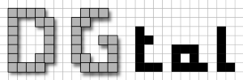

- Generated on for DGtal by
 1.18.0
1.18.0
|
DGtal 2.2.0
|

DGtal is a generic open source library for Digital Geometry programming whose primary objective is to gather and structure different developments from the digital geometry and topology community. The benefits are numerous: to make easier the appropriation of our tools for a neophyte (new Ph.D. students, researchers from other topics, ...), to permit better comparisons of new methods with already existing approaches, to construct a federative project. Furthermore, we believe this is a necessary step for better recognition of the efficiency of discrete geometry techniques by the important image analysis community. As a consequence, DGtal is designed to simplify the construction of useful demonstration tools. New results are thus easily shared with a vast audience.
On a more technical level, DGtal is developed in C++. Similarly to other classical libraries such as CGAL, it follows the paradigm of genericity with efficiency. This approach is made possible with the now well-known notion of concepts, implemented with templated types. The kernel of DGtal offers digital spaces of arbitrary dimension, with user-chosen integer types. Several digital topology algorithms are already implemented (Rosenfeld topology, connected components, simple points, homotopic thinning). The kernel manages generic images (standard raster images but also tree images). Basic geometric primitives (digital lines and segments) are also available, as well as arbitrary dimensional volumetric distance transforms. A stream mechanism has been developed to display digital objects and export results in different vector formats.
DGtal is a collaborative effort of the French —for now— digital geometry community. It is still a work in progress but shows already many promises to be the common basis for future developments made by the digital geometry community.
DGtal received the Symposium on Geometry Processing Software Award in 2016.
DGtal is associated with the projects DGtalTools and DGtalTools-contrib. Please have a look at the DGtalTools online documentation for additional information.
Documentation of the associated DGtalTools project Visit the DGtal homepage LibBoard section page